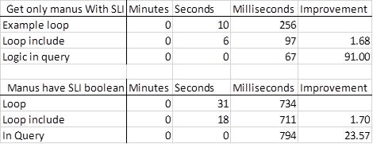

I recently started using Entity Framework in earnest and agree that it is a fantastic tool. Something I found however is that it can have performance issues especially when dealing with bulk data. These are the techniques I discovered that can radically improve the situation so that hopefully EF will be fast enough for most common bulk data operations.
Entity framework is already great when dealing with one or two records at a time, both creating/updating and reading. The examples on Pluralsight and the Microsoft pages illustrate well how to quickly and reliably create apps that would otherwise take longer and be harder to maintain. The problem doesn't manifest until you start trying to operate on larger datasets. This might be because you are importing data, or perhaps processing large numbers of child objects.
I divide the optimisations into two main parts. The first is of benefit mainly when creating new records, and the second when reading existing. The sections below discuss these but you should also bear in mind the points later about real world usage.
All code examples can be found in full on github here.
If you are creating new / updating existing records in bulk then you need to be aware of 'AutoDetectChangesEnabled'.
http://msdn.microsoft.com/en-gb/data/jj556205.aspx
To summarise the above linked page, you can set it to false whilst making changes to your entity objects which postpones all the processing EF will do as you update/create objects. You then have to set it back to true after making your changes and before saving them.
db.Configuration.AutoDetectChangesEnabled = false;
for (int i = 0; i < num; i++)
{
db.Blogs.Add(new Blog { Name = "blog " + i.ToString() });
}
db.Configuration.AutoDetectChangesEnabled = true;
db.SaveChanges();
An alternative (when creating new entities) is to create the objects in memory and add them to the context with AddRange.
For the following tests I will be using the blogging app example from the Microsoft 'Data Developer Center'.
The test compares running with 'AutoDetectChangesEnabled' as true, as false, with AddRange and (as a control) with a stored procedure passed a TableValueParameter (as this is the fastest way I know of to create/update bulk records in .Net).
Test 1: Create 10,000 blogs with 1 post each.
Test 2: Create 100 blogs with 100 posts each.
Test 3: Create 1 blog with 10,000 posts.
Test 4: Create 1,000 blogs with 1,000 posts.
All tests were done locally on a desktop PC with a local TSQL database being created new for each run.
The results are as follows.
*I was unable to run test 4 using any method but TVP, it was taking too long (much longer than 30 minutes, quick guess is about 4-8 hours) with normal processing and had out of memory errors with postponed and AddRange methods. For this reason using PostPoned or AddRange methods should be limited to reasonably sized groups of data.
For updating in my tests there seemed to be no difference between postponed and normal change detection, although this might be specific to my situation.
For further discussion on this and additional suggestions see this Stack Overflow thread:
For bulk create operations bigger than a hundred you will want to use Postponed change detection or AddRange as these are orders of magnitude faster than normal processing. If dealing with datasets significantly bigger than 10,000 records you will either need to break up the operation into chunks or fall back to Table Value Parameters passed to stored procedure.
The way you write your code can have significant impacts on performance when performing bulk operations. You have to really think about the data you actually need and write the EF query to only return that. Avoid doing any filtering outside of the query.
The question to ask is, "Am I getting this data because:
In my example a collection of manufacturer Ids are passed into a method. An EF call is made to obtain the manufacturer objects that match the names passed in. A loop then processes these objects to filter those that match some condition based on the state of child objects.
List<manufacturer> manufacturers = db.Manufacturers.Where(m => manufacturersToLookAt.Contains(m.Id)).ToList();
List<string> manufacturersWithSmallLightItems = new List<string>();
foreach (var manufacturer in manufacturers)
{
if (manufacturer.Items.Any(m => m.MetersCubed < 2 && m.Weight < 5))
{
manufacturersWithSmallLightItems.Add(manufacturer.Name);
}
}
return manufacturersWithSmallLightItems;
On each pass of the loop the code is looking at the collection of items connected to the manufacturer. Because EF needs to get this data from SQL this translates to 1 SQL call per loop iteration.
You could prevent this by adding "Items" to the "includes" list,
List<string> manufacturers = db.Manufacturers.Include(i => i.Items).Where(m => manufacturersToLookAt.Contains(m.Id)).ToList();
A much more effective way to accomplish the same thing is to
move the full logic into the EF query.
List<string> manufacturersWithSmallLightItems = db.Manufacturers .Where(m => manufacturersToLookAt.Contains(m.Id) && m.Items.Any(i => i.MetersCubed < 2 && i.Weight < 5)) .Select(m => m.Name) .ToList();
In the tests I am querying 100 manufacturers which results in 98 matching objects.
A total of 6 test results are presented as 2 groups of 3 tests. The first group of tests just cares about the matching manufacturers, the second group return all manufacturers with a calculated result of matching or not. The variations on the test are:

In a production environment you may not have access to the context
object, if for instance the existing architecture has
hidden EF behind a repository layer.
(Which has both pros and cons.)
In addition there may be some relationships in the database that are not
represented in the EF models with virtual properties. In order to still be able
to make efficient use of EF for bulk operations the repository layer will need
to return the EF IQueryable rather than for instance, an IList, and also allow
for specifying 'includes'.
If the repository layer doesn't return the IQueryable object you may need to create specific repository methods in order to get suitable performance.
If your repository layer is returning the IQueryable object,
then you can compose an efficient query by passing one query object into other
query, EF will turn it into a nested subquery which will still be faster than
returning more data than is needed and performing the logic in code.
In the example below 'ItemOrder' does not have a virtual property relationship with 'Item' even though there is a logical connection.
First the 'ItemOrder' query is composed and this is passed into the 'Item' query.
EF will compile this code into a single SQL query and will only return the data needed because the query isn't compiled until needed (in the ToList method).
var orderRepo = new LogisticsRepo<Itemorder>(); var itemRepo = new LogisticsRepo<Item>(); var outstandingOrderItemIds = orderRepo.GetQueryable(o => !o.DeliveredDate.HasValue).Select(o => o.ItemId); var manus = itemRepo.GetQueryable(i => outstandingOrderItemIds.Contains(i.Id)) .Select(i => i.Manufacturer.Name) .Distinct() .ToList();
Sam Price
Unless otherwise specified all code in this post is made available under the MIT license. Copyright 2015 Creou Limited.